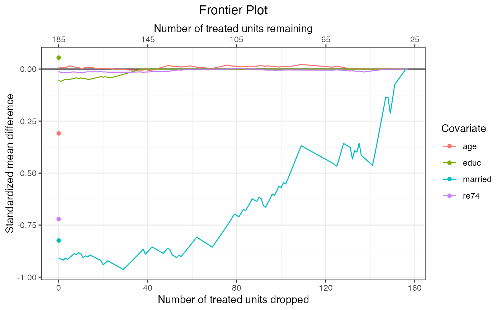
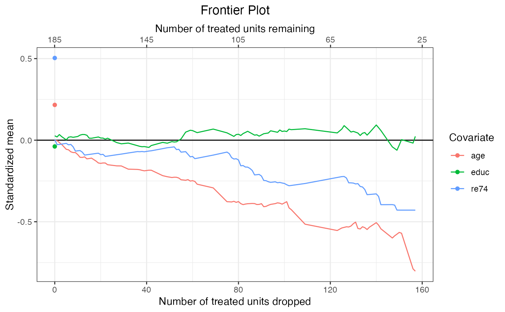
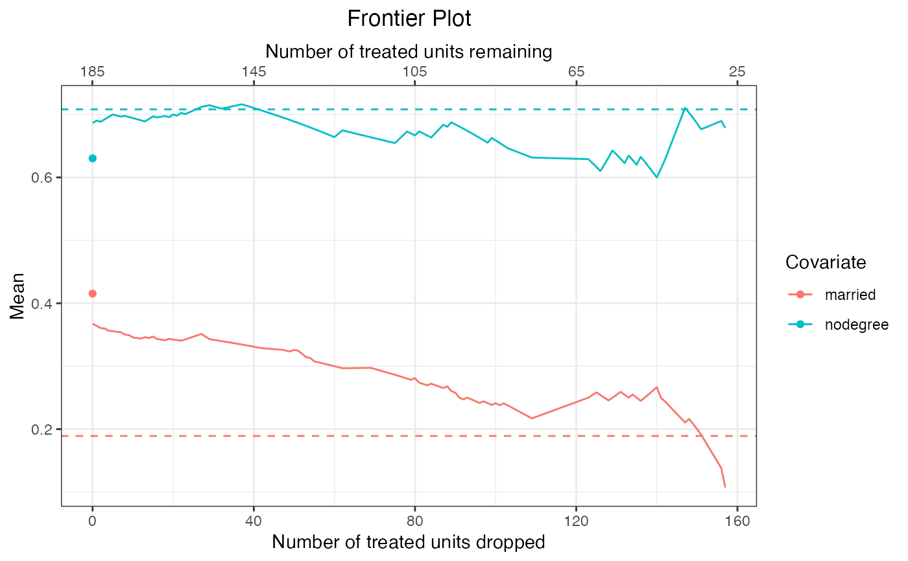

Plot the Balance-Sample Size Frontier
plot.matchFrontier.RdPlots the balance-sample size frontier for the supplied matchFrontier object. Can also plot covariate-specific mean differences and means to assess balance on individual covariates across the frontier.
# S3 method for matchFrontier plot(x, covs = NULL, stat = "std-diff", ...)
Arguments
| x | a |
|---|---|
| covs | the names of covariates for which mean differences or means are to be displayed. If |
| stat | if |
| ... | if |
Details
plot.matchFrontier() uses ggplot2::geom_line() to display the balance-sample size frontier. The plot has two x-axes: the bottom one indicates the number of units dropped, and the top one indicates the number of units remaining. Which group this "number of units" refers to depends on the QOI and metric supplied to the original call to makeFrontier().
When covs is NULL, the y-axis indicates the value of the imbalance metric at the given sample size; otherwise, it indicates the value of the balance statistic for the covariates supplied to covs depending on the arguments to stat.
When covariates are supplied to covs, one of six plots can be produced:
standardized mean differences between treatment groups (
stat = "std-diff", the default).raw mean differences between treatment groups (
stats = "diff")Kolmogorov-Smirnov statistics between the treatment groups (
stat = "ks")standardized means, which are equivalent to standardized mean differences between the full matched sample and the target sample (
stat = "std-mean")raw means in the matched sample (
stat = "mean")Sample-target Kolmogorov-Smirnov statistics, the Kolmogorov-Smirnov statistic between the full matched sample and the target sample (
stat = "ks-target")
The target sample depends on the argument to QOI in the original call to makeFrontier(): when "SATE" or "FSATE", the target sample is the full sample prior to matching; when "SATT" or "FSATT", the target sample is the treated group prior to matching. The target sampel also determines the standardization factor when compute standardized means or mean differences.
When stat = "mean", a dashed line will appear on the plot for each covariate indicating its mean in the target sample. Otherwise, an additional point will be plotted indicating the statistic computed prior to matching; for energy distance- and bin-based frontiers, this is the start of the frontier, but for pair distance-based frontier, the frontier starts after matching, so the additional point corresponds to balance prior to the initial point of the frontier.
Value
A ggplot object that can be further manipulated using ggplot2 functionality. For example, to zoom in on an area of the plot, coord_cartesian() can be used.
See also
Examples
data("lalonde", package = "MatchIt") #Pair distance frontier for FSATT f1 <- makeFrontier(treat ~ age + educ + married + re74, data = lalonde, QOI = "FSATT", metric = "Mahal") #Plot the balance metric frontier plot(f1)#Plot standardized mean differences plot(f1, covs = c("age", "educ", "married", "re74"), stat = "std-diff")#Plot standardized deviations from the mean #of the treated group in the original #sample (prior to matching) plot(f1, covs = c("age", "educ", "re74"), stat = "std-mean")#Plot covariate means across the frontier; #make sure variables are on the same scale! plot(f1, covs = c("married", "nodegree"), stat = "mean")